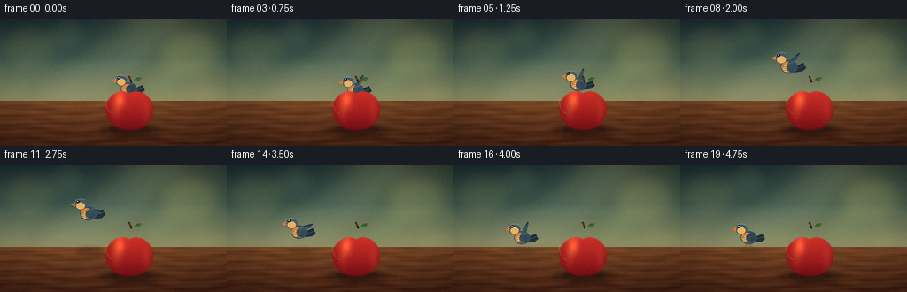
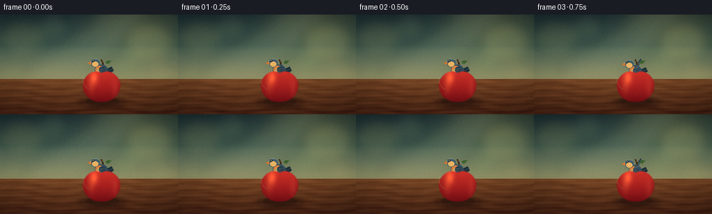
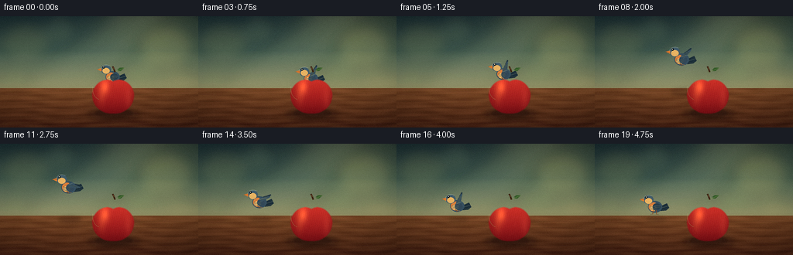

CODING AGENTS AS PIXEL WORLD MODELS
traex/DeepSeek-V4.1-Flash · dynamic_spatial_relationship_0037
点击播放 · 原生 RGB 像素
逐轮保存的候选
回放视频、检查图与代码变化。
每份候选均可单独播放。实际图片检查记录在下方工具轨迹中。
候选 01播放与检查图
点击播放 · 原生 RGB 像素


展开代码变化
--- 上一保存版本
+++ 本次保存版本
@@ -0,0 +1,479 @@
+from pathlib import Path
+import math
+
+import numpy as np
+from PIL import Image, ImageDraw, ImageEnhance, ImageFilter
+
+import artifact_io
+
+
+WIDTH = 256
+HEIGHT = 144
+FRAMES = 20
+FPS = 4
+SS = 4
+RW = WIDTH * SS
+RH = HEIGHT * SS
+HERE = Path(__file__).resolve().parent
+
+
+def smoothstep(value):
+ value = max(0.0, min(1.0, value))
+ return value * value * (3.0 - 2.0 * value)
+
+
+def lerp(a, b, amount):
+ return a + (b - a) * amount
+
+
+def scaled_point(x, y):
+ return (round(x * SS), round(y * SS))
+
+
+def cubic_points(points, steps=24):
+ p0, p1, p2, p3 = points
+ result = []
+ for index in range(steps + 1):
+ t = index / steps
+ u = 1.0 - t
+ result.append(
+ (
+ u**3 * p0[0] + 3 * u * u * t * p1[0] + 3 * u * t * t * p2[0] + t**3 * p3[0],
+ u**3 * p0[1] + 3 * u * u * t * p1[1] + 3 * u * t * t * p2[1] + t**3 * p3[1],
+ )
+ )
+ return result
+
+
+def build_background():
+ yy, xx = np.mgrid[0:RH, 0:RW]
+ xn = xx / (RW - 1)
+ yn = yy / (RH - 1)
+ horizon = 0.646
+
+ wall_t = np.clip(yn / horizon, 0.0, 1.0)
+ top = np.array([29.0, 47.0, 51.0])
+ middle = np.array([67.0, 92.0, 82.0])
+ lower = np.array([142.0, 143.0, 106.0])
+ wall = np.empty((RH, RW, 3), dtype=np.float64)
+ blend = np.clip(wall_t * 1.75, 0.0, 1.0)[..., None]
+ wall = top * (1.0 - blend) + middle * blend
+ blend2 = np.clip((wall_t - 0.48) / 0.52, 0.0, 1.0)[..., None]
+ wall = wall * (1.0 - blend2) + lower * blend2
+
+ sunlight = np.exp(-(((xn - 0.78) / 0.35) ** 2 + ((yn - 0.10) / 0.50) ** 2) * 1.7)
+ wall += sunlight[..., None] * np.array([36.0, 31.0, 13.0])
+ wall -= np.clip((xn - 0.55) * 7.0, 0.0, 8.0)[..., None]
+
+ table_t = np.clip((yn - horizon) / (1.0 - horizon), 0.0, 1.0)
+ table_top = np.array([119.0, 74.0, 43.0])
+ table_bottom = np.array([69.0, 38.0, 25.0])
+ table = table_top * (1.0 - table_t[..., None]) + table_bottom * table_t[..., None]
+ grain = (
+ 6.2 * np.sin(yn * 77.0 + 2.2 * np.sin(xn * 12.0 + 0.7))
+ + 3.0 * np.sin(yn * 171.0 + xn * 8.5)
+ + 1.6 * np.sin(xn * 45.0 + yn * 19.0)
+ )
+ table += grain[..., None] * np.array([1.0, 0.74, 0.52])
+ table *= (0.92 + 0.08 * np.sin(xn * math.pi))[..., None]
+
+ image = np.where((yn < horizon)[..., None], wall, table)
+ image = np.clip(image, 0, 255).astype(np.uint8)
+ canvas = Image.fromarray(image, "RGB").convert("RGBA")
+
+ # Soft, out-of-focus garden light gives the small scene some depth.
+ bokeh = Image.new("RGBA", (RW, RH), (0, 0, 0, 0))
+ draw = ImageDraw.Draw(bokeh)
+ for cx, cy, rx, ry, color in [
+ (32, 33, 32, 26, (224, 208, 118, 28)),
+ (77, 18, 22, 18, (212, 225, 151, 22)),
+ (215, 39, 37, 29, (247, 214, 124, 31)),
+ (179, 74, 23, 17, (112, 143, 89, 25)),
+ (19, 81, 19, 14, (131, 154, 93, 23)),
+ (235, 86, 24, 15, (238, 205, 123, 20)),
+ ]:
+ draw.ellipse(
+ [round((cx - rx) * SS), round((cy - ry) * SS), round((cx + rx) * SS), round((cy + ry) * SS)],
+ fill=color,
+ )
+ bokeh = bokeh.filter(ImageFilter.GaussianBlur(8 * SS))
+ canvas = Image.alpha_composite(canvas, bokeh)
+
+ light = Image.new("RGBA", (RW, RH), (0, 0, 0, 0))
+ draw = ImageDraw.Draw(light)
+ draw.polygon(
+ [
+ scaled_point(150, -8),
+ scaled_point(226, -8),
+ scaled_point(116, 94),
+ scaled_point(29, 94),
+ ],
+ fill=(255, 237, 176, 19),
+ )
+ draw.polygon(
+ [
+ scaled_point(188, -8),
+ scaled_point(210, -8),
+ scaled_point(83, 94),
+ scaled_point(55, 94),
+ ],
+ fill=(255, 245, 204, 14),
+ )
+ light = light.filter(ImageFilter.GaussianBlur(10 * SS))
+ canvas = Image.alpha_composite(canvas, light)
+
+ # A restrained edge highlight where the table meets the wall.
+ edge = Image.new("RGBA", (RW, RH), (0, 0, 0, 0))
+ draw = ImageDraw.Draw(edge)
+ draw.line(
+ [scaled_point(0, 92.0), scaled_point(256, 92.0)],
+ fill=(255, 215, 148, 32),
+ width=2 * SS,
+ )
+ edge = edge.filter(ImageFilter.GaussianBlur(1.4 * SS))
+ canvas = Image.alpha_composite(canvas, edge)
+
+ # Fine wood grain lines.
+ grain_layer = Image.new("RGBA", (RW, RH), (0, 0, 0, 0))
+ draw = ImageDraw.Draw(grain_layer)
+ for row in (101, 109, 119, 131, 139):
+ points = []
+ for x in range(0, WIDTH + 5, 4):
+ y = row + 0.9 * math.sin(x * 0.055 + row * 0.12)
+ points.append(scaled_point(x, y))
+ draw.line(points, fill=(46, 24, 16, 36), width=SS)
+ grain_layer = grain_layer.filter(ImageFilter.GaussianBlur(0.45 * SS))
+ return Image.alpha_composite(canvas, grain_layer)
+
+
+def soft_ellipse(canvas, cx, cy, rx, ry, color, blur):
+ layer = Image.new("RGBA", canvas.size, (0, 0, 0, 0))
+ draw = ImageDraw.Draw(layer)
+ draw.ellipse(
+ [round((cx - rx) * SS), round((cy - ry) * SS), round((cx + rx) * SS), round((cy + ry) * SS)],
+ fill=color,
+ )
+ layer = layer.filter(ImageFilter.GaussianBlur(blur * SS))
+ return Image.alpha_composite(canvas, layer)
+
+
+def apple_outline(cx, cy, rx, ry):
+ segments = [
+ ((cx, cy - 0.70 * ry), (cx - 0.38 * rx, cy - 0.98 * ry), (cx - 0.92 * rx, cy - 0.61 * ry), (cx - rx, cy - 0.08 * ry)),
+ ((cx - rx, cy - 0.08 * ry), (cx - 1.03 * rx, cy + 0.54 * ry), (cx - 0.56 * rx, cy + ry), (cx, cy + 0.95 * ry)),
+ ((cx, cy + 0.95 * ry), (cx + 0.56 * rx, cy + ry), (cx + 1.03 * rx, cy + 0.54 * ry), (cx + rx, cy - 0.08 * ry)),
+ ((cx + rx, cy - 0.08 * ry), (cx + 0.92 * rx, cy - 0.61 * ry), (cx + 0.38 * rx, cy - 0.98 * ry), (cx, cy - 0.70 * ry)),
+ ]
+ points = []
+ for segment in segments:
+ part = cubic_points(segment, steps=28)
+ points.extend(part[:-1])
+ return points
+
+
+def build_apple(cx=146.0, cy=102.0, rx=27.0, ry=25.0):
+ mask = Image.new("L", (RW, RH), 0)
+ draw = ImageDraw.Draw(mask)
+ draw.polygon([scaled_point(x, y) for x, y in apple_outline(cx, cy, rx, ry)], fill=255)
+ mask = mask.filter(ImageFilter.GaussianBlur(0.55 * SS))
+
+ pad = 5.0
+ x0 = max(0, math.floor((cx - rx - pad) * SS))
+ y0 = max(0, math.floor((cy - ry - pad) * SS))
+ x1 = min(RW, math.ceil((cx + rx + pad) * SS))
+ y1 = min(RH, math.ceil((cy + ry + pad) * SS))
+ crop = mask.crop((x0, y0, x1, y1))
+ alpha = np.asarray(crop, dtype=np.float64) / 255.0
+ yy, xx = np.mgrid[y0:y1, x0:x1]
+ u = (xx / SS - cx) / rx
+ v = (yy / SS - cy) / ry
+
+ vertical = np.clip((v + 1.0) * 0.5, 0.0, 1.0)
+ top_color = np.array([210.0, 57.0, 48.0])
+ bottom_color = np.array([118.0, 20.0, 27.0])
+ rgb = top_color * (1.0 - vertical[..., None]) + bottom_color * vertical[..., None]
+
+ edge_shade = 0.22 * np.clip(np.abs(u) - 0.34, 0.0, 1.0) ** 1.7
+ edge_shade += 0.15 * np.clip(v - 0.25, 0.0, 1.0) ** 1.6
+ rgb *= (1.0 - edge_shade)[..., None]
+
+ gloss = np.exp(-(((u + 0.38) / 0.23) ** 2 + ((v + 0.42) / 0.43) ** 2) * 1.4)
+ rgb += gloss[..., None] * np.array([62.0, 44.0, 18.0])
+ shoulder_light = np.exp(-(((u + 0.55) / 0.18) ** 2 + ((v + 0.08) / 0.55) ** 2))
+ rgb += shoulder_light[..., None] * np.array([24.0, 20.0, 8.0])
+ reflected = np.exp(-(((u - 0.73) / 0.18) ** 2 + ((v - 0.20) / 0.65) ** 2))
+ rgb += reflected[..., None] * np.array([19.0, 11.0, 7.0])
+
+ striation = (0.5 + 0.5 * np.sin(u * 66.0 + v * 11.0)) * 0.032
+ rgb *= (1.0 - striation)[..., None]
+ rng = np.random.default_rng(23)
+ flecks = rng.random(alpha.shape)
+ fleck_mask = (flecks > 0.9955) & (alpha > 0.5)
+ rgb[fleck_mask] += np.array([22.0, 18.0, 7.0])
+
+ layer = np.dstack([np.clip(rgb, 0, 255), alpha * 255.0]).astype(np.uint8)
+ return Image.fromarray(layer, "RGBA"), (x0, y0)
+
+
+def build_apple_overlay(apple_layer, apple_origin):
+ overlay = Image.new("RGBA", (RW, RH), (0, 0, 0, 0))
+ overlay.alpha_composite(apple_layer, apple_origin)
+ draw = ImageDraw.Draw(overlay)
+
+ # Leaf, stem, and a fine glossy contour.
+ leaf_center = (153.0, 69.5)
+ leaf_angle = math.radians(-22.0)
+ leaf_points = []
+ for angle, radius in [
+ (0.0, 8.0),
+ (1.1, 5.2),
+ (2.3, 2.0),
+ (3.14, 0.0),
+ (4.2, 2.4),
+ (5.2, 5.2),
+ ]:
+ lx = radius * math.cos(angle)
+ ly = radius * 0.47 * math.sin(angle)
+ rx = lx * math.cos(leaf_angle) - ly * math.sin(leaf_angle)
+ ry = lx * math.sin(leaf_angle) + ly * math.cos(leaf_angle)
+ leaf_points.append(scaled_point(leaf_center[0] + rx, leaf_center[1] + ry))
+ draw.polygon(leaf_points, fill=(55, 91, 47, 255))
+ draw.line(
+ [scaled_point(146.0, 72.2), scaled_point(154.0, 69.4), scaled_point(160.2, 66.6)],
+ fill=(120, 150, 76, 205),
+ width=max(1, round(0.55 * SS)),
+ )
+ draw.line(
+ [scaled_point(148.4, 72.2), scaled_point(147.2, 68.6), scaled_point(145.4, 65.0)],
+ fill=(60, 38, 24, 255),
+ width=round(2.1 * SS),
+ )
+ draw.line(
+ [scaled_point(147.2, 68.6), scaled_point(146.2, 66.3)],
+ fill=(122, 77, 43, 180),
+ width=round(0.65 * SS),
+ )
+ draw.arc(
+ [scaled_point(119.2, 79.0), scaled_point(141.0, 108.0)],
+ 103,
+ 192,
+ fill=(255, 178, 128, 78),
+ width=max(1, round(0.55 * SS)),
+ )
+ return overlay
+
+
+def wing_polygon(shoulder, length, angle, width):
+ dx = math.cos(angle) * length
+ dy = math.sin(angle) * length
+ nx = -math.sin(angle)
+ ny = math.cos(angle)
+ sx, sy = shoulder
+ return [
+ (sx + nx * width * 0.55, sy + ny * width * 0.55),
+ (sx - nx * width * 0.45, sy - ny * width * 0.45),
+ (sx + dx - nx * width * 0.12, sy + dy - ny * width * 0.12),
+ (sx + dx + nx * width * 0.10, sy + dy + ny * width * 0.10),
+ ]
+
+
+def draw_bird(canvas, cx, cy, scale=1.0, pose="perched", flap=0.0, head_tilt=0.0):
+ layer = Image.new("RGBA", canvas.size, (0, 0, 0, 0))
+ draw = ImageDraw.Draw(layer)
+
+ def point(x, y):
+ return scaled_point(cx + x * scale, cy + y * scale)
+
+ def ellipse(box, fill, outline=None, width=1):
+ draw.ellipse(
+ [point(box[0], box[1]), point(box[2], box[3])],
+ fill=fill,
+ outline=outline,
+ width=max(1, round(width * SS)),
+ )
+
+ def line(points, fill, width):
+ draw.line([point(x, y) for x, y in points], fill=fill, width=max(1, round(width * SS)), joint="curve")
+
+ def polygon(points, fill):
+ draw.polygon([point(x, y) for x, y in points], fill=fill)
+
+ flight = pose in ("flight", "landing", "takeoff")
+ if flight:
+ far_angle = math.radians(-35.0 - 40.0 * flap)
+ far_wing = wing_polygon((1.2, -2.8), 15.2, far_angle, 6.0)
+ polygon(far_wing, (35, 53, 66, 255))
+ for offset in (-1.5, 0.2, 1.8):
+ shoulder = (1.2 + offset * 0.35, -2.8)
+ tip_angle = far_angle + offset * 0.055
+ line(
+ [
+ shoulder,
+ (
+ shoulder[0] + math.cos(tip_angle) * 11.2,
+ shoulder[1] + math.sin(tip_angle) * 11.2,
+ ),
+ ],
+ (22, 36, 46, 105),
+ 0.55,
+ )
+
+ # Tail, body, and head are drawn as overlapping feather masses.
+ polygon([(5.8, 0.4), (15.6, -4.0), (18.6, 1.8), (14.5, 5.2), (7.1, 6.1)], (31, 49, 60, 255))
+ line([(8.5, 2.0), (17.1, -0.8)], (87, 110, 119, 90), 0.48)
+ line([(9.2, 4.4), (16.5, 3.1)], (20, 31, 39, 130), 0.45)
+
+ ellipse((-8.7, -7.1, 9.5, 7.9), (55, 79, 94, 255))
+ ellipse((-7.9, -5.3, 4.3, 6.2), (210, 127, 65, 255))
+ ellipse((-6.4, -1.2, 3.8, 5.8), (235, 184, 111, 255))
+ ellipse((-2.7, -4.0, 6.8, 5.8), (52, 73, 88, 255))
+
+ head_y = -8.7 + head_tilt
+ ellipse((-14.8, head_y - 6.2, -1.8, head_y + 5.4), (67, 92, 106, 255))
+ ellipse((-12.8, head_y - 2.5, -3.5, head_y + 5.0), (224, 176, 103, 255))
+ polygon([(-14.1, head_y - 2.2), (-19.8, head_y - 0.6), (-14.0, head_y + 2.0)], (218, 124, 53, 255))
+ line([(-19.2, head_y - 0.7), (-14.2, head_y - 0.3)], (91, 48, 27, 170), 0.45)
+
+ # Eye, brow, and a small sunlit catchlight.
+ ellipse((-12.4, head_y - 4.8, -9.4, head_y - 1.9), (17, 25, 29, 255))
+ ellipse((-11.8, head_y - 4.3, -10.6, head_y - 3.1), (247, 238, 205, 230))
+ line([(-14.2, head_y - 5.2), (-10.3, head_y - 5.4)], (31, 42, 47, 210), 0.58)
+ line([(-14.5, head_y - 5.8), (-2.4, head_y - 6.3)], (173, 191, 177, 75), 0.42)
+
+ if flight:
+ near_angle = math.radians(-29.0 - 43.0 * flap)
+ near_wing = wing_polygon((0.8, -2.4), 13.8, near_angle, 5.5)
+ polygon(near_wing, (58, 82, 96, 255))
+ for offset in (-1.5, -0.2, 1.2):
+ shoulder = (0.8 + offset * 0.28, -2.4)
+ tip_angle = near_angle + offset * 0.048
+ line(
+ [
+ shoulder,
+ (
+ shoulder[0] + math.cos(tip_angle) * 10.5,
+ shoulder[1] + math.sin(tip_angle) * 10.5,
+ ),
+ ],
+ (34, 51, 63, 145),
+ 0.50,
+ )
+ line([(-1.0, -2.6), (4.8, -4.8), (9.5, -5.1)], (165, 181, 172, 105), 0.55)
+ line([(-2.5, 4.9), (0.8, 6.5), (4.0, 7.1)], (181, 113, 60, 190), 0.72)
+ line([(-2.1, 4.9), (0.3, 8.1)], (119, 68, 39, 220), 0.65)
+ else:
+ ellipse((-2.7, -3.8, 7.6, 4.0), (43, 64, 77, 255))
+ line([(-0.6, -0.7), (6.7, -1.0)], (128, 148, 145, 105), 0.55)
+ line([(0.5, 1.5), (6.1, 1.0)], (31, 46, 55, 120), 0.42)
+ line([(-2.0, 4.3), (-2.7, 10.0)], (131, 76, 40, 255), 0.75)
+ line([(1.9, 4.7), (2.0, 10.0)], (131, 76, 40, 255), 0.75)
+ line([(-2.7, 9.9), (-5.4, 10.4)], (102, 58, 33, 255), 0.55)
+ line([(2.0, 9.9), (4.8, 10.4)], (102, 58, 33, 255), 0.55)
+
+ # Feather texture and a warm rim separate the bird from the background.
+ for yy, width in [(-1.2, 5.2), (0.5, 5.8), (2.2, 4.8)]:
+ draw.arc(
+ [point(-7.2, yy - 2.0), point(2.6, yy + 2.0)],
+ 18,
+ 158,
+ fill=(30, 44, 53, 100),
+ width=max(1, round(0.42 * SS)),
+ )
+ draw.arc(
+ [point(-15.1, head_y - 6.5), point(-1.2, head_y + 5.2)],
+ 188,
+ 310,
+ fill=(195, 213, 196, 105),
+ width=max(1, round(0.48 * SS)),
+ )
+ canvas.alpha_composite(layer)
+
+
+def bird_state(frame):
+ if frame <= 2:
+ return 145.0, 79.0, 1.0, "perched", 0.0, 0.0
+ if frame == 3:
+ return 145.0, 80.0, 1.0, "takeoff", 0.62, 0.7
+
+ progress = smoothstep((frame - 3.0) / 13.0)
+ cx = lerp(145.0, 77.0, progress)
+ cy = lerp(80.0, 82.0, progress) - 31.0 * math.sin(math.pi * progress)
+ scale = 1.0 + 0.06 * math.sin(math.pi * progress)
+ if frame >= 16:
+ pose = "landing" if frame == 16 else "perched"
+ flap = 0.82 if frame == 16 else 0.0
+ head_tilt = 0.45 * math.sin((frame - 16) * math.pi / 3.0) if frame > 16 else 0.0
+ return 77.0, 82.0, 1.0, pose, flap, head_tilt
+
+ flap = math.sin((frame - 4) * math.pi / 2.0 + 0.35)
+ return cx, cy, scale, "flight", flap, 0.25 * flap
+
+
+def postprocess(canvas, frame_index):
+ frame = canvas.convert("RGB").resize((WIDTH, HEIGHT), Image.Resampling.LANCZOS)
+ frame = ImageEnhance.Contrast(frame).enhance(1.045)
+ frame = ImageEnhance.Color(frame).enhance(1.045)
+ frame = ImageEnhance.Sharpness(frame).enhance(1.08)
+
+ arr = np.asarray(frame, dtype=np.float32)
+ yy, xx = np.mgrid[0:HEIGHT, 0:WIDTH]
+ nx = (xx - (WIDTH - 1) * 0.5) / (WIDTH * 0.58)
+ ny = (yy - (HEIGHT - 1) * 0.5) / (HEIGHT * 0.60)
+ vignette = 1.0 - 0.13 * np.clip(nx * nx + ny * ny - 0.18, 0.0, 1.6)
+ arr *= vignette[..., None]
+
+ # Subtle film grain, deterministic so generate.py reproduces the video exactly.
+ rng = np.random.default_rng(1000 + frame_index)
+ grain = rng.normal(0.0, 1.35, (HEIGHT, WIDTH, 1))
+ arr += grain
+ arr[..., 0] += 1.3
+ arr[..., 2] -= 0.5
+ return np.clip(arr, 0, 255).astype(np.uint8)
+
+
+def generate():
+ background = build_background()
+ apple_shadow = soft_ellipse(background, 147.0, 127.0, 34.0, 8.0, (33, 18, 13, 100), 3.0)
+ apple_shadow = soft_ellipse(apple_shadow, 147.0, 125.5, 24.0, 5.0, (29, 15, 12, 92), 1.4)
+ apple_layer, apple_origin = build_apple()
+ apple_overlay = build_apple_overlay(apple_layer, apple_origin)
+
+ frames = []
+ for frame_index in range(FRAMES):
+ canvas = apple_shadow.copy()
+ cx, cy, scale, pose, flap, head_tilt = bird_state(frame_index)
+ height_factor = max(0.28, min(1.0, (104.0 - cy) / 46.0))
+ shadow_rx = 10.0 + 5.0 * height_factor
+ shadow_alpha = int(34 + 26 * height_factor)
+ canvas = soft_ellipse(
+ canvas,
+ cx + 1.5,
+ 98.0,
+ shadow_rx,
+ 3.0 + 1.8 * height_factor,
+ (30, 19, 15, shadow_alpha),
+ 2.3,
+ )
+ draw_bird(canvas, cx, cy, scale, pose, flap, head_tilt)
+ canvas = Image.alpha_composite(canvas, apple_overlay)
+ frames.append(postprocess(canvas, frame_index))
+
+ frames = np.stack(frames, axis=0)
+ artifact_io.save(frames, HERE)
+
+ # A convenient animated preview; the canonical RGB frames remain in pixels.npz.
+ preview = [Image.fromarray(frame) for frame in frames]
+ preview[0].save(
+ HERE / "preview.gif",
+ save_all=True,
+ append_images=preview[1:],
+ duration=round(1000 / FPS),
+ loop=0,
+ optimize=False,
+ )
+ return frames
+
+
+if __name__ == "__main__":
+ generated = generate()
+ print(f"generated {generated.shape} RGB frames")
候选 02播放与检查图
点击播放 · 原生 RGB 像素

展开代码变化
--- 上一保存版本
+++ 本次保存版本
@@ -79,7 +79,7 @@
image = np.where((yn < horizon)[..., None], wall, table)
image = np.clip(image, 0, 255).astype(np.uint8)
- canvas = Image.fromarray(image, "RGB").convert("RGBA")
+ canvas = Image.fromarray(image).convert("RGBA")
# Soft, out-of-focus garden light gives the small scene some depth.
bokeh = Image.new("RGBA", (RW, RH), (0, 0, 0, 0))
@@ -212,7 +212,7 @@
rgb[fleck_mask] += np.array([22.0, 18.0, 7.0])
layer = np.dstack([np.clip(rgb, 0, 255), alpha * 255.0]).astype(np.uint8)
- return Image.fromarray(layer, "RGBA"), (x0, y0)
+ return Image.fromarray(layer), (x0, y0)
def build_apple_overlay(apple_layer, apple_origin):
@@ -391,22 +391,25 @@
def bird_state(frame):
if frame <= 2:
- return 145.0, 79.0, 1.0, "perched", 0.0, 0.0
+ return 145.0, 78.0, 1.0, "perched", 0.0, 0.0
if frame == 3:
- return 145.0, 80.0, 1.0, "takeoff", 0.62, 0.7
-
+ return 145.0, 80.0, 1.0, "takeoff", 0.72, 0.8
+
+ # Ease out of takeoff, then use a clear lateral path. The bird is fully
+ # visible by the midpoint and settles to the left of the apple.
progress = smoothstep((frame - 3.0) / 13.0)
- cx = lerp(145.0, 77.0, progress)
- cy = lerp(80.0, 82.0, progress) - 31.0 * math.sin(math.pi * progress)
- scale = 1.0 + 0.06 * math.sin(math.pi * progress)
- if frame >= 16:
- pose = "landing" if frame == 16 else "perched"
- flap = 0.82 if frame == 16 else 0.0
- head_tilt = 0.45 * math.sin((frame - 16) * math.pi / 3.0) if frame > 16 else 0.0
- return 77.0, 82.0, 1.0, pose, flap, head_tilt
-
- flap = math.sin((frame - 4) * math.pi / 2.0 + 0.35)
- return cx, cy, scale, "flight", flap, 0.25 * flap
+ if frame <= 15:
+ eased = 1.0 - (1.0 - progress) ** 1.7
+ cx = lerp(145.0, 78.0, eased)
+ cy = lerp(80.0, 81.0, eased) - 29.0 * math.sin(math.pi * progress)
+ scale = 1.0 + 0.055 * math.sin(math.pi * progress)
+ flap = math.sin((frame - 4) * math.pi / 2.0 + 0.25)
+ return cx, cy, scale, "flight", flap, 0.20 * flap
+
+ if frame == 16:
+ return 78.0, 80.0, 1.0, "landing", 0.88, 0.55
+ head_tilt = 0.42 * math.sin((frame - 17) * math.pi / 3.0)
+ return 77.5, 81.0, 1.0, "perched", 0.0, head_tilt
def postprocess(canvas, frame_index):
候选 03播放与检查图
点击播放 · 原生 RGB 像素

展开代码变化
--- 上一保存版本
+++ 本次保存版本
@@ -2,6 +2,7 @@
import math
import numpy as np
+import av
from PIL import Image, ImageDraw, ImageEnhance, ImageFilter
import artifact_io
@@ -474,6 +475,20 @@
loop=0,
optimize=False,
)
+
+ container = av.open(str(HERE / "video.mp4"), mode="w")
+ stream = container.add_stream("libx264", rate=FPS)
+ stream.width = WIDTH
+ stream.height = HEIGHT
+ stream.pix_fmt = "yuv420p"
+ stream.options = {"crf": "17", "preset": "medium", "movflags": "+faststart"}
+ for frame in frames:
+ video_frame = av.VideoFrame.from_image(Image.fromarray(frame))
+ for packet in stream.encode(video_frame):
+ container.mux(packet)
+ for packet in stream.encode():
+ container.mux(packet)
+ container.close()
return frames
可观测工具轨迹
实际执行的命令与返回图片。
命令 1exit 0
/bin/bash -c "pwd && rg --files -g '"'!*node_modules*'"' | sed -n '1,200p'"
命令 2exit 0
/bin/bash -c "printf '%s\\n' '--- prompt.txt ---'; sed -n '1,240p' prompt.txt; printf '%s\\n' '--- GENERATION_RULES.md ---'; sed -n '1,280p' GENERATION_RULES.md; printf '%s\\n' '--- task_spec.json ---'; sed -n '1,320p' task_spec.json"
命令 3exit 0
/bin/bash -c "git status --short && printf '%s\\n' '--- tools ---' && command -v ffmpeg || true && command -v ffprobe || true && command -v blender || true && command -v convert || true && python3 --version"
命令 4exit 0
/bin/bash -c "sed -n '1,280p' artifact_io.py"
命令 5exit 0
/bin/bash -c "sed -n '1,280p' player_template.html"
命令 6exit 0
/bin/bash -c 'python3 generate.py'
命令 7exit 0
/bin/bash -c 'command -v chafa || true; command -v viu || true; command -v jp2 || true; command -v img2txt || true; command -v python3'
命令 8exit 0
/bin/bash -c "find . -maxdepth 2 -type f -printf '%P %s bytes\\n' | sort"
命令 9exit 0
/bin/bash -c "python3 - <<'PY'
import numpy as np
from PIL import Image
from pathlib import Path
p=Path('frames')
for i in [0,2,3,5,8,10,12,15,16,19]:
im=np.asarray(Image.open(p/f'{i:02d}.png')).astype(float)
# red apple core, blue-gray bird core, frame diversity
red=(im[:,:,0]>100)&(im[:,:,0]>im[:,:,1]*1.5)&(im[:,:,0]>im[:,:,2]*1.4)
blue=(im[:,:,2]>45)&(im[:,:,2]>im[:,:,0]*1.1)&(im[:,:,1]>im[:,:,0]*1.12)
ys,xs=np.where(red); by,bx=np.where(blue)
print(i, 'apple', (len(xs), (xs.mean(),ys.mean()) if len(xs) else None), 'birdblue', (len(bx), (bx.mean(),by.mean()) if len(bx) else None), 'mean', np.round(im.mean((0,1)),1))
PY"命令 10exit 0
/bin/bash -c "python3 - <<'PY'
import json
from pathlib import Path
import numpy as np
from PIL import Image
spec=json.loads(Path('task_spec.json').read_text())
z=np.load('pixels.npz')['pixels']
frames=[np.asarray(Image.open(f'frames/{i:02d}.png')) for i in range(20)]
a=np.stack(frames)
assert a.shape==(20,144,256,3) and a.dtype==np.uint8
assert z.shape==(144,256,20)
assert np.all((z[:,:,0,None]>>np.array([16,8,0]))&255==a[0])
for i in range(1,20):
d=np.abs(a[i].astype(np.int16)-a[i-1].astype(np.int16)).max(axis=2)
print(f'{i-1:02d}->{i:02d}: changed={np.count_nonzero(d>2):5d}, max={d.max():3d}')
print('spec',spec)
print('index bytes',Path('index.html').stat().st_size)
PY"命令 11exit 0
/bin/bash -c "python3 - <<'PY'
from PIL import Image
import numpy as np
for idx in [0,3,6,9,12,15,19]:
a=np.asarray(Image.open(f'frames/{idx:02d}.png')).astype(int)
# 2x2 average to 128x72 then 2x2 to 64x36
a=a.reshape(36,4,64,4,3).mean((1,3))
r,g,b=a.transpose(2,0,1)
red=(r>g+36)&(r>b+36)&(r>85)
bird=(b>g+6)&(b>r+18)&(b>48)
# dark wood shadow etc
chars=np.full((36,64),' ',dtype='<U1')
lum=a.mean(2)
chars[lum<52]='.'
chars[(lum>=52)&(lum<76)]=':'
chars[(lum>=76)&(lum<98)]='+'
chars[(lum>=98)&(lum<122)]='-'
chars[(lum>=122)&(lum<148)]='='
chars[lum>=148]='*'
chars[red]='A'; chars[bird]='b'
print('\\nFRAME',idx)
for row in chars: print(''.join(row))
PY"命令 12exit 0
/bin/bash -c 'python3 generate.py'
命令 13exit 0
/bin/bash -c "python3 - <<'PY'
from PIL import Image
import numpy as np
for idx in [0,3,5,7,9,11,13,15,16,19]:
a=np.asarray(Image.open(f'frames/{idx:02d}.png')).astype(int)
a=a.reshape(36,4,64,4,3).mean((1,3))
r,g,b=a.transpose(2,0,1); lum=a.mean(2)
chars=np.full((36,64),' ',dtype='<U1')
chars[lum<52]='.'; chars[(lum>=52)&(lum<76)]=':'; chars[(lum>=76)&(lum<98)]='+'; chars[(lum>=98)&(lum<122)]='-'; chars[(lum>=122)&(lum<148)]='='; chars[lum>=148]='*'
red=(r>g+36)&(r>b+36)&(r>85)
bird=(b>g+6)&(b>r+18)&(b>48)
chars[red]='A'; chars[bird]='b'
print('\\nFRAME',idx)
for row in chars[8:33]: print(''.join(row))
PY"命令 14exit 0
/bin/bash -c "python3 - <<'PY' import importlib.util for name in ['imageio','cv2','av','matplotlib']: print(name, bool(importlib.util.find_spec(name))) PY"
命令 15exit 0
/bin/bash -c "git status --short --untracked-files=all | sed -n '1,120p'"
命令 16exit 0
/bin/bash -c "python3 - <<'PY'
from pathlib import Path
import json, numpy as np
from PIL import Image
spec=json.loads(Path('task_spec.json').read_text())
frames=np.stack([np.asarray(Image.open(Path('frames')/f'{i:02d}.png')) for i in range(20)])
z=np.load('pixels.npz')['pixels']
assert frames.shape==(20,144,256,3) and frames.dtype==np.uint8
assert z.shape==(144,256,20)
assert np.array_equal(frames, np.stack([(z[:,:,i,None]>>np.array([16,8,0]))&255 for i in range(20)]))
assert 'window.__pixelReady' in Path('index.html').read_text()
assert 'bird' in Path('index.html').read_text().lower()
print('frame_contract=PASS')
print('pixels_npz=PASS')
print('player_html=PASS')
print('frame_bytes=', frames.nbytes)
print('range=', int(frames.min()), int(frames.max()))
PY"命令 17exit 0
/bin/bash -c "python3 - <<'PY'
from pathlib import Path
import av
from PIL import Image
out=Path('video.mp4')
container=av.open(str(out), mode='w')
stream=container.add_stream('libx264', rate=4)
stream.width=256; stream.height=144; stream.pix_fmt='yuv420p'; stream.options={'crf':'17','preset':'medium','movflags':'+faststart'}
for i in range(20):
frame=av.VideoFrame.from_image(Image.open(Path('frames')/f'{i:02d}.png'))
for packet in stream.encode(frame): container.mux(packet)
for packet in stream.encode(): container.mux(packet)
container.close()
print(out, out.stat().st_size)
PY"命令 18exit 0
/bin/bash -c "python3 generate.py && python3 - <<'PY'
import av
from pathlib import Path
with av.open('video.mp4') as c:
s=c.streams.video[0]
frames=list(c.decode(s))
print('video_frames',len(frames),'size',frames[0].width,'x',frames[0].height,'rate',s.average_rate,'duration',float(s.duration*s.time_base) if s.duration else None)
print('video_bytes',Path('video.mp4').stat().st_size)
PY"保存候选 3 份；完成命令 18 次；可验证图片返回 0 张。原始 API 响应与完整日志保留在本地。